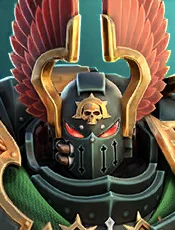

| # | Joueur | Score | Jetons perdus |  Magnus Magnus |  Thaumachus Thaumachus |  Abraxas Abraxas |  Lion El'Jonson |  Baraqiel Baraqiel |  Forcas Forcas | Belisarius Cawl |  Tan Gi'da Tan Gi'da |  Actus Actus |  Riptide Riptide |  Sho'syl Sho'syl |  Re'vas Re'vas |  Aethana Aethana |  Eldryon Eldryon | |
|---|---|---|---|---|---|---|---|---|---|---|---|---|---|---|---|---|---|---|
| 1 | Alvalero | +21,1 % | 0 | +28,6 % | - | - | - | - | - | - | - | - | +12,1 % | - | - | +21,6 % | - | - |
| 2 | AllHailShadowSn | +18,2 % | 0 | -4,4 % | +7,3 % | - | - | - | - | - | - | - | +34,8 % | +13,9 % | - | - | +28,1 % | - |
| 3 | RaK | +17,3 % | 0 | +26,8 % | - | - | -2,7 % | - | - | +0,7 % | - | +12,3 % | - | - | - | - | - | +7,6 % |
| 4 | Eliox | +15,3 % | 0 | +21,7 % | - | - | +8,0 % | - | - | +25,5 % | - | +12,3 % | - | - | - | +14,4 % | - | - |
| 5 | GAlbric | +12,1 % | 1 | +21,0 % | - | - | +3,0 % | - | - | +0,7 % | - | - | +15,0 % | - | - | +35,8 % | - | - |
| 6 | Qiramond | +10,6 % | 0 | +18,7 % | - | - | +9,5 % | - | - | - | - | - | -33,7 % | - | - | -4,3 % | - | - |
| 7 | RandAlThor | +10,1 % | 0 | +15,4 % | - | - | -34,9 % | +24,5 % | - | - | - | - | +1,6 % | - | - | +20,3 % | - | - |
| 8 | ΚΘDΙΛΛΚ | +8,1 % | 4 | +31,8 % | - | - | +20,0 % | - | - | - | - | - | - | - | - | +16,4 % | - | - |
| 9 | RegalBaston | +7,1 % | 0 | -17,1 % | - | - | +7,5 % | - | - | +3,5 % | - | - | +21,3 % | - | - | -10,5 % | - | - |
| 10 | bqsylou | +6,0 % | 1 | +2,3 % | - | - | -22,7 % | - | +5,3 % | - | - | - | +18,3 % | - | - | - | +1,1 % | - |
| 11 | Bixa | +0,4 % | 0 | -5,9 % | - | - | +1,0 % | - | - | +9,8 % | - | -18,5 % | -6,7 % | - | - | +2,7 % | - | - |
| 12 | Ellimi | -0,3 % | 0 | -37,3 % | - | - | -1,4 % | - | -0,9 % | +14,1 % | - | - | +23,9 % | - | +0,3 % | -3,3 % | - | - |
| 13 | Zebulon | -1,1 % | 0 | -3,8 % | - | - | +10,0 % | - | - | - | - | - | -1,1 % | - | - | +1,3 % | - | - |
| 14 | Garonne | -1,6 % | 1 | -56,0 % | - | +7,0 % | - | +25,9 % | - | - | +0,0 % | - | +30,6 % | - | - | -6,1 % | - | - |
| 15 | Peuchy | -2,5 % | 1 | +19,9 % | - | - | - | - | - | -45,9 % | - | - | -25,6 % | - | - | -35,0 % | - | - |
| 16 | Sephiroth | -4,3 % | 0 | -14,5 % | - | - | +10,1 % | - | - | +0,5 % | - | - | -56,4 % | - | - | +2,6 % | -20,0 % | - |
| 17 | Kingju | -6,0 % | 0 | -0,9 % | - | - | -6,5 % | - | - | +25,3 % | - | - | -14,4 % | - | - | -5,1 % | - | - |
| 18 | Thoramok | -7,4 % | 2 | +8,7 % | - | - | -5,8 % | - | - | - | - | - | -49,4 % | -70,6 % | - | +1,9 % | - | - |
| 19 | Silmar | -8,8 % | 2 | +4,4 % | - | - | +7,6 % | - | - | -8,7 % | - | - | -39,4 % | - | - | -5,7 % | - | - |
| 20 | Lupercal | -11,2 % | 0 | -8,6 % | - | - | -17,8 % | - | - | -20,3 % | - | - | -13,9 % | - | - | - | - | - |
| 21 | PsychoRazahrds | -11,4 % | 0 | -7,0 % | - | - | -53,2 % | - | -8,6 % | - | - | - | -4,9 % | - | - | - | - | - |
| 22 | Kumal | -13,6 % | 0 | -14,9 % | - | - | -5,9 % | - | - | +6,9 % | - | - | -35,9 % | - | - | -24,9 % | - | - |
| 23 | BrutaL | -16,3 % | 0 | -14,6 % | - | - | +6,7 % | - | - | -8,5 % | - | - | -54,0 % | - | - | -10,9 % | - | - |
| 24 | Lafleur | -16,7 % | 1 | -21,1 % | - | - | +1,0 % | - | - | -8,8 % | - | - | -30,5 % | - | - | -8,2 % | - | - |
| 25 | Stitchy | -17,5 % | 3 | -1,4 % | - | - | +0,3 % | - | - | -10,7 % | - | - | -30,6 % | - | - | -2,5 % | - | - |
| 26 | Eks | -18,5 % | 5 | -5,6 % | - | - | +2,2 % | - | - | - | - | - | -21,8 % | - | - | +23,0 % | - | - |
| 27 | Kerhor | -20,4 % | 0 | -36,7 % | - | -2,8 % | - | -37,0 % | - | - | - | - | -24,8 % | - | +7,7 % | - | - | - |
| 28 | PsychoNizz | -20,8 % | 1 | -46,4 % | -7,3 % | - | -3,0 % | +7,9 % | - | -9,0 % | - | - | -48,7 % | +14,4 % | -23,7 % | -6,5 % | - | - |
| 29 | Zyxs | -27,5 % | 1 | -33,6 % | - | - | -2,3 % | - | - | - | - | - | -29,0 % | - | - | - | -37,3 % | -15,2 % |
| 30 | Psychward | -40,1 % | 8 | -10,9 % | - | - | - | - | - | - | - | - | -46,9 % | - | - | - | - | - |
Dégâts par attaque relativement à la moyenne de la guilde sur la saison, sans finishs, à partir de Legendary 4. Une saison compte 27 jetons : chaque jeton non joué est un jeton perdu et retire 1/27 des dégâts du score de la saison